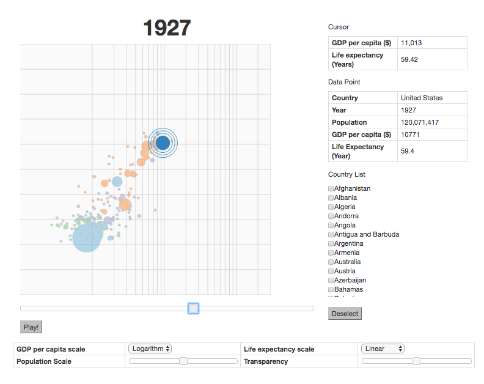
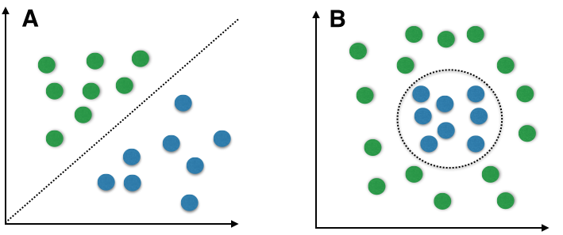
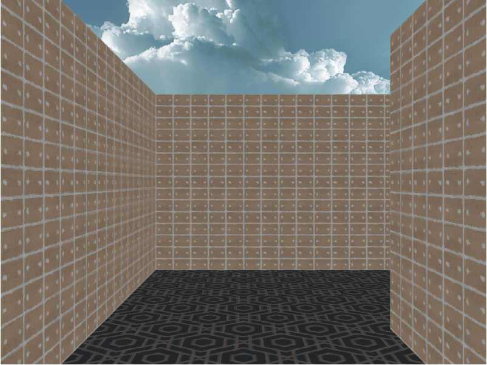

Global Development Visualization

Time: March, 2017
Tags: Computer Graphics, GLSL, jQuery
Description: This visualization displayed the growth of different countries in the world in terms of population (bubble size), expected life expectancy (y axis) and GDP(x-axis) since 1800s. The data set is from
gapminder. There are some interesting patterns at times of globally influential events such as wars and economic depression.
>> Click for detail
Name Gender Classifier

Image credit: http://sebastianraschka.com/Articles/2014_naive_bayes_1.html
Time: March, 2017
Tags: Machine Learning, Naive Bayes Classifier, Numpy, Python
Description: This project aims to classify whether a name is a girl's name or boy's name with Naive Bayes classifier.
We made some assumptions on this problem, some of them turned out to be effective. I would like to share some of our intuitions:
- Characters on the edge (starting and ending characters) is very helpful in classifying names. We define a variable FIX, which means the maximum number of characters to examine. The accuracy is highest when FIX = 3. The accuracy reached 80% after this feature being implemented;
- Secondly, long names and short names should have different features respectively, as the previous feature only care about the beginning and ending characters but does not care about length at all. We think we should include some features which can incorporate the length of name strings. For short names, we checked the pattern of name composition. For example, our pattern represents consecutive vows/ non-vows in a name string. This feature is limited for short names, otherwise, some pattern would be too sparse to be effective. For long names, we extract some hedge segments from training data. This is a complement for edge characters because edge characters only check beginning and ending characters but ignore some important segments in the middle of name strings. The hedge segments are selected with the following constraint: 1) it must appear very frequent in data set; 2) it must appear more frequently in one class than the other. After these 2 features implemented, the result reached as high as 84.6%.
There are something else we learned from this project:
An effective feature should have less sparsity. For example, for edge characters, if FIX is too large, there must be a lot of distinct features and some of them might only appear limited times, which makes it nothing more than 'feature memorization'. The most extreme example is - if FIX is equal to the length of the name, the whole name will be used as a feature.
Maze Crawler

Time: April, 2017
Tags: Computer Graphics, GLSL, jQuery
Description: This is a maze crawler similar to old Window screen saver. It may take a few seconds to load materials in the site. Use up, down to move forward or backward, and key left, right to turn left or right. You can edit Eye Height and Field of View to update camera parameters. In addition, you can customize your own maze by editing content in Maze. You have to note that the maze should be a m*n matrix, with "#" as wall, "." as path. You can use "N","S","W","E" to locate your starting point with each of them represent facing north, south, west and east. There should be only one starting point in a maze. Last but not least, the outermost layer must be "#".
>> Click for detail